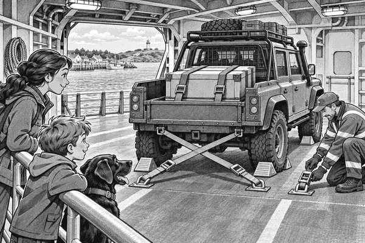

Dark clouds gathered above Storm Harbour.
Far across the water stood Gull Island.
Its lighthouse needed a new power unit.
Without it, the lamp might go dark.
Ranger Mia had the power unit in her cargo 4x4.
It sat low in the rear bed.
Four strong straps held it down.
Dad drove the escort vehicle.
Tom and Scout sat safely inside.
Scout's black nose pointed towards the harbour.
The last ferry waited at the quay.
Its wide rear ramp was open.
But the wind was growing stronger.
Whoooosh. Slap. Whoooosh.
Waves slapped against the harbour wall.
The ferry captain checked the weather.
“We can make one safe crossing,” she said.
“But we must load now.”
Mia stopped before the ramp.
Nobody rushed.
A deck worker checked the truck's height.
Another checked its weight.
The power unit was heavy.
It had to stay low and still.
Ferry fact: A roll-on ferry has a strong ramp. Cars and lorries can drive aboard at one port and drive off at another.
The worker raised one hand.
Mia selected low gear.
The cargo truck crawled forwards.
Rumble. Clank. Rumble.
Its front wheels reached the ramp.
The ramp moved a little with the ferry.
Mia kept the truck straight.
She did not stop halfway.
The rear wheels rolled over the hinge.
Now the whole truck was inside.
The deck worker guided Mia to a marked space.
She stopped the engine.
Workers placed strong chocks beside the tyres.
A chock is a wedge that helps stop a wheel rolling.
Then they fastened straps from the truck to the deck.
Two straps crossed at the back.
Two held the front.
Each one was pulled tight.
Tom and Scout watched from behind a safety rail.
Tom pointed at the crossed straps.
“The truck has a seat belt!” he said.
Mia smiled.
“Four very strong ones.”
Cargo fact: A load must be secured for movement forwards, backwards and sideways. Ferry workers also secure the whole vehicle to the deck.
The rear ramp rose.
The ropes came free.
The ferry moved away from the quay.
Tom, Dad and Scout went to the passenger room.
Mia joined them after the final checks.
Outside, the sea rolled beneath the ferry.
Hummm. Swoosh. Hummm.
The truck did not move.
The power unit did not slide.
Chocks, deck straps and cargo straps all did their jobs.
Soon a white beam flashed through the mist.
Gull Island lighthouse!
The ferry entered the small island harbour.
The crew lowered the ramp.
They removed the deck straps and chocks.
Mia checked the cargo straps once more.
Then the 4x4 rolled onto Gull Island.
By evening, the new power unit was working.
The lighthouse lamp shone across the dark sea.
Tom patted Scout.
“The truck carried the power unit,” he said.
“And the ferry carried the truck.”
Scout gave one proud woof.
The last truck had caught the Storm Ferry.
1. What did Mia carry to Gull Island?
2. Why did workers cross straps behind the truck?
3. What carried the whole truck across the sea?